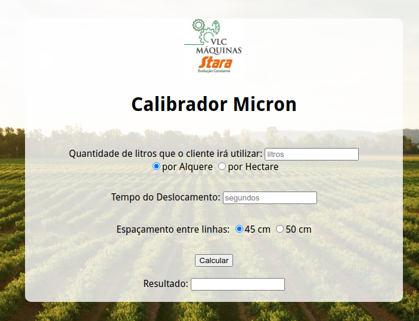

Contatos:
 Facebook
Facebook
 Instagram
Instagram
Olá, eu sou o Felipe, graduando de Tecnologia em Sistemas para Internet e estudante de programação. Atualmente estou aprendendo C/C++, Java, e HTML5/CSS3 com Javascript.
Program para cálculo da energia associada à órbita de um planeta feito em Python.


Aplicação WEB para cálculo e calibração de taxa de pulverização com Micron.
